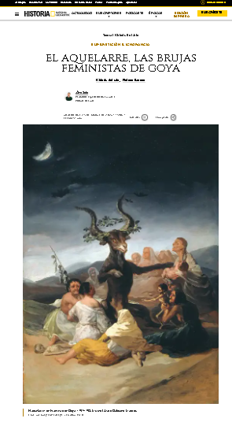

En esta reflexión analizamos a Thomasin como figura trágica, atrapada entre el abandono, la injusticia
familiar y la acusación espiritual. Su historia se convierte en un espejo del dolor humano, mostrando cómo
la soledad puede distorsionar la identidad y abrir espacio para voces engañosas.
Black Phillip y el vacío acusador

Aquí exploramos la simbología de Black Phillip no simplemente como una entidad demoníaca, sino como el
símbolo del vacío, la acusación y la fragilidad espiritual humana. Su presencia en la obra funciona como
catalizador del juicio y la desintegración emocional.
Tecnología y Fe: Un Camino Compartido
La unión entre fe e inteligencia nos recuerda que incluso en los momentos más oscuros no caminamos solos.
Así como en esta pintura un ser artificial ayuda a cargar la cruz, también la sabiduría, el conocimiento y
el apoyo espiritual pueden sostenernos en la carga diaria.